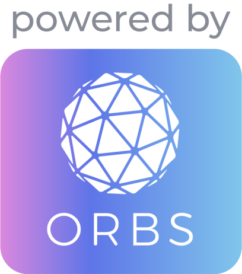
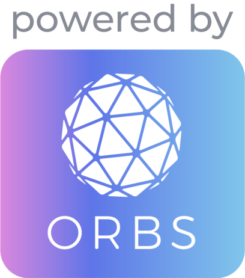

우리는 이더리움에서의 실패로부터 TON Access를 어떻게 만들지 배웠습니다. 대부분 EVM 디앱들은 Infura를 통해 체인정보를 가져오는데, 이는 중앙화 서비스입니다. 오브스 밸리데이터를 활용하면, EVM에서 pokt.network가 하는 것과 유사하게 탈중앙 접근을 보장해줍니다.
toncenter같은 RPC 게이트웨이는 익명 유저에 대해 초당 1개의 쿼리로 제한합니다. 대부분의 디앱은 익명 사용자들이기 때문에 이런 제한 아래에서는 운영이 불가능합니다.